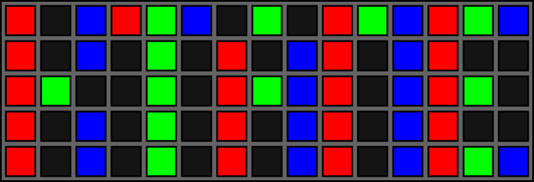

On the Subject of Smallfont
font so small nobody know’s im gay
Treat the colors of the squares as a 3×5 font by taking the RGB components of each square and separating them into their individual R, G, and B values. When separated, it will spell out a word present in the table below.
Press the square at the position where the word is found in the table.
An example using “KTANE” is shown in the right two diagrams.